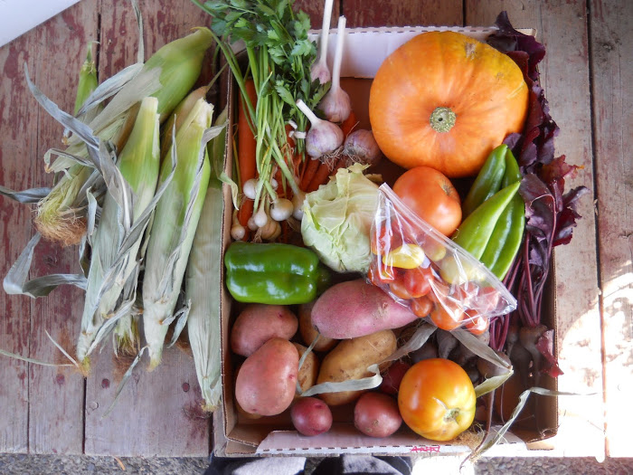
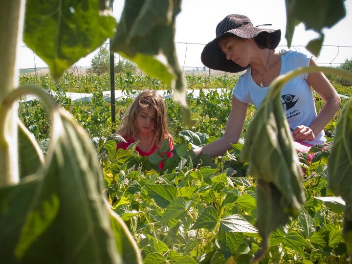

Becoming a Member
Option 1: Paying Member
Harvest House Farm members receive door-step deliveries of fresh veggies, flowers and herbs--always picked fresh that day--to the Bozeman, Belgrade and Gateway communities. Membership includes 16 weekly deliveries starting early-mid June (with seasonal variance with temperature and weather factors), continuing until early September.
Weekly deliveries include: tomatoes, onions, peppers (spicy and Bell), radishes, corn, cabbage, peas, french beans, potatoes, beets, kohlrabi, carrots, garlic, zucchini and winter squash; herbs: fennel, parsley, hyssop, and basil; and flowers: mixed bouquet of sunflowers, aster, and others. Exact quantities and types of fruit and veggies will vary by availability during the growing season--harvested as they ripen and mature. Special requests can be made
All produce and deliveries are included for a Seasonal Fee of $425 for a large share and small shares for $325. Full shares are designed to provide produce needs for one family of four for one week. Payments can be made in flexible installments.

Option 2: Working Membership
Harvest House Farms offers working memberships, encouraging willing workers to come to the farm, participate in most aspects of farming (planting, weeding, harvesting, etc.) in exchange for discounted membership price for their veggies, herbs and flowers. Don't worry if your thumb isn't the greenest and your not exactly muscle bound; we can instruct you on the ways of gardening and can find tasks that fit your comfort level and abilities.
Check out our 'Project' section for more information about what type of tasks you can expect, and we also accept help with delivery driving, technical/blog support, and carpentry and construction. If you think you may have valuable job skills not listed above, please contact us, and we may be able to accommodate your special skills.
We require 4 hours of work per week in exchange for a weekly installment of veggies, herbs and flowers (just as for other members). Exact days and times are flexible and can fit your schedule. Working Member season typically begins in early-mid June, and lasts until early September (with some variation due to weather conditions).
Please don't hesitate to contact us today for further information. We look forward to hearing from you and sewing together our local community through farm and garden. HarvestHouseFarm@gmail.com or call us at 406-763-4464
